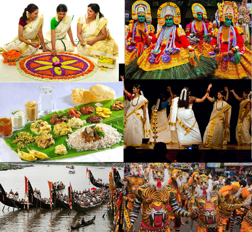

The traditional culture of Kerala is a rich, diverse blend of Dravidian and Aryan influences, celebrated through vibrant performing arts like Kathakali, Mohiniyattam, and Theyyam, alongside ancient martial arts, Kalaripayattu. Key cultural pillars include festivals like Onam and Vishu, traditional sadya meals, intricate wooden architecture, and a strong adherence to Ayurveda and, frequently, matrilineal heritage.
Key Aspects of Kerala Culture Performing Arts: Kathakali is a world-renowned classical dance-drama known for elaborate makeup and costumes, while Mohiniyattam is a graceful, feminine dance. Other forms include Thullal (satirical), Theyyam (ritualistic), and Oppana (Muslim bridal dance). Festivals: Onam is the biggest harvest festival, involving feasts (sadya) and boat races, while Vishu marks the Malayalam New Year, often featuring fireworks and traditional offerings. Martial Art: Kalaripayattu is considered one of the oldest martial arts in the world, emphasizing agility, weapon training, and body suppleness. Cuisine: Known for its use of coconut, rice, tapioca, and spices, meals are traditionally served on banana leaves, with favorites including idiyappam and kallappam. Clothing: Traditional wear is modest and light, typically featuring the white and gold Mundu (worn by men) and Saree (by women), often known as Kasavu. Temple Architecture: Characterized by specialized woodwork and gable roofs, designed to withstand heavy rainfall. Religions: The population consists of a harmonious mix of Hindu, Muslim, and Christian communities, each contributing unique customs to the cultural tapestry.